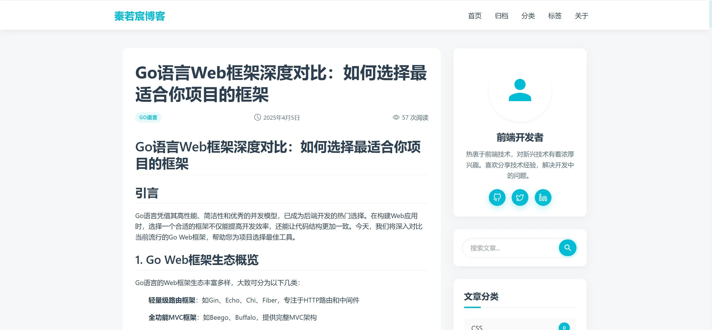
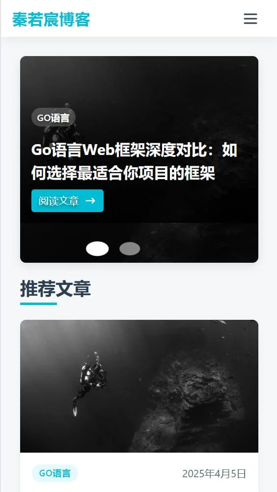

个人博客前端 (SSR版)
项目概述
这是一个基于Nuxt.js开发的现代化个人博客系统，采用SSR（服务端渲染）技术，提供极致的用户体验和优秀的SEO表现。项目采用最新的前端技术栈，实现了响应式设计、暗黑模式、文章搜索等丰富功能。
项目亮点
- 首屏加载时间优化至1秒以内
- 支持PWA，可添加到主屏幕
- 实现文章阅读进度追踪
- 支持代码块复制和行号显示
- 集成图片懒加载和渐进式加载
核心功能
- 基于Nuxt.js的SSR渲染，提升首屏加载速度和SEO效果
- 使用TailwindCSS实现响应式设计和主题定制
- 集成Markdown编辑器，支持代码高亮和数学公式
- 实现文章搜索、分类、标签等核心功能
- 支持评论系统和社交分享
- 集成数据统计和访问分析
技术栈
- 前端框架：Nuxt.js 3.x
- UI框架：TailwindCSS
- 状态管理：Pinia
- 构建工具：Vite
- 代码规范：ESLint + Prettier
- 版本控制：Git + GitHub Actions
项目展示

博客首页 - 首页展示

博客详情页 - 文章内容展示

移动端 - 文章列表
移动端 - 文章详情
×